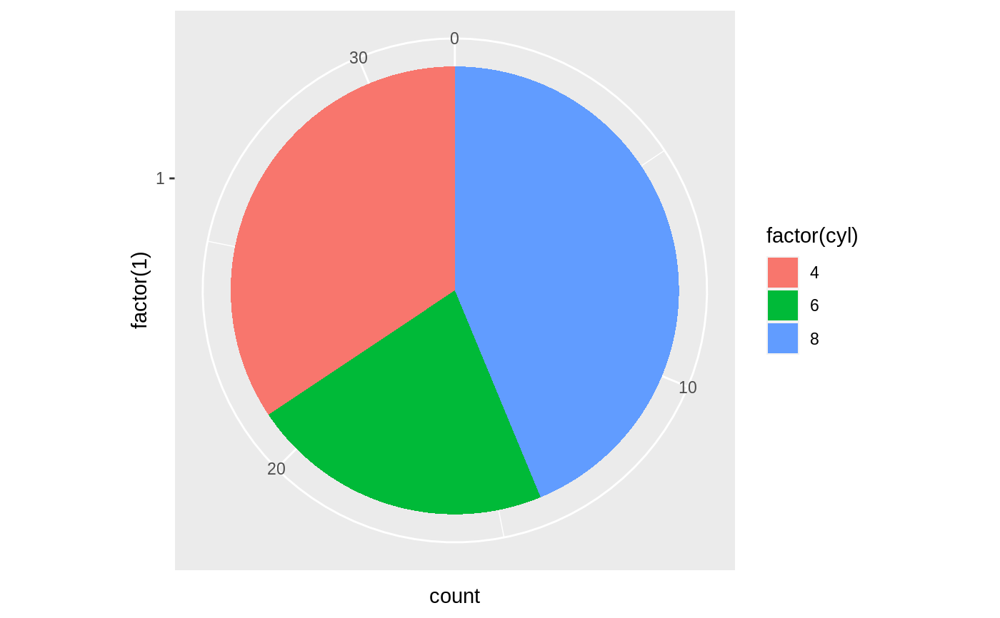
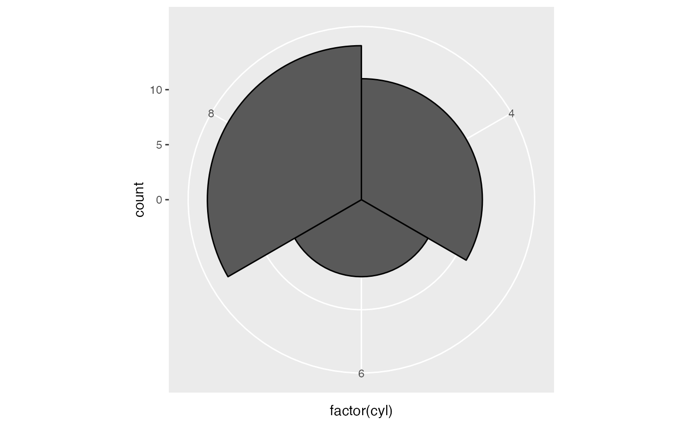
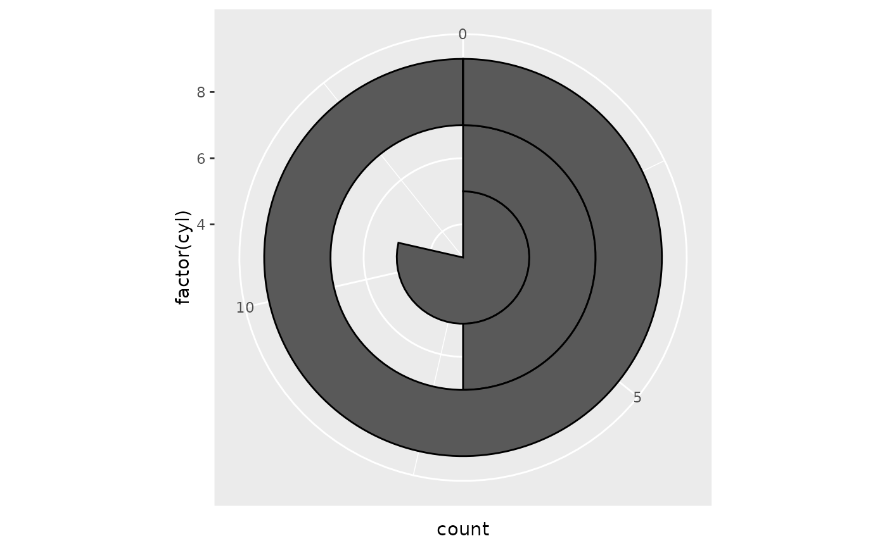
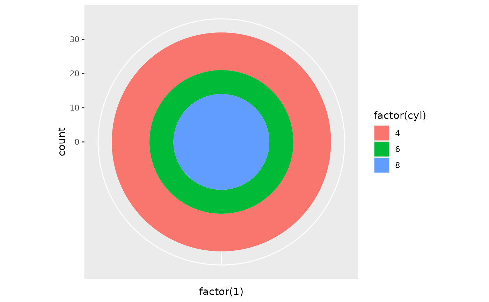
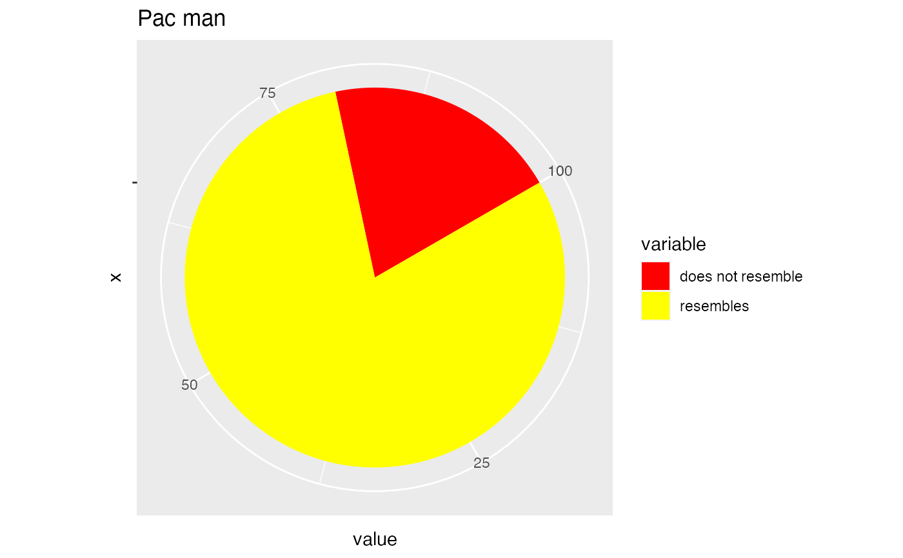
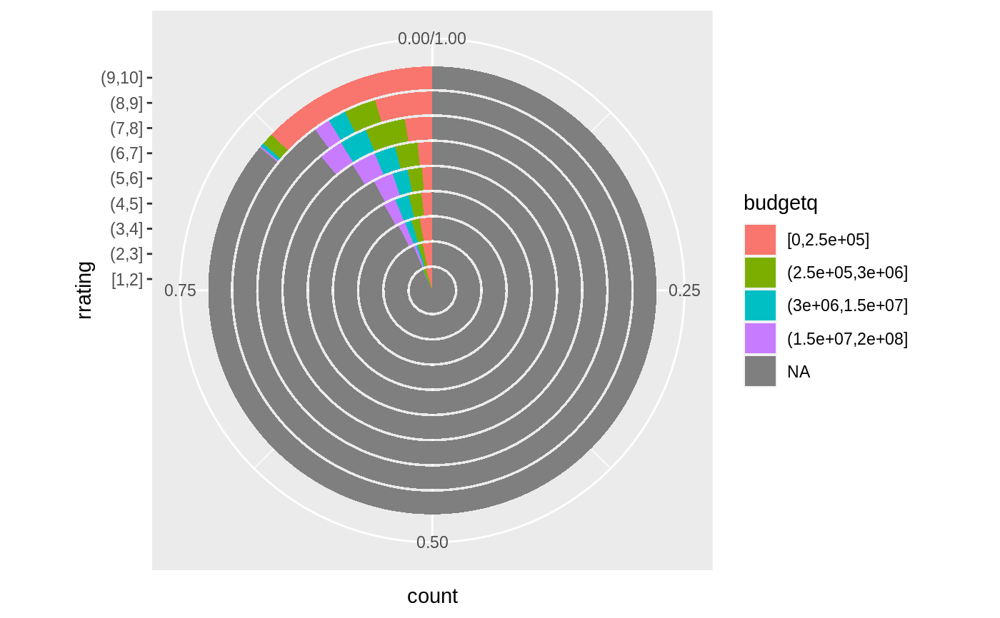
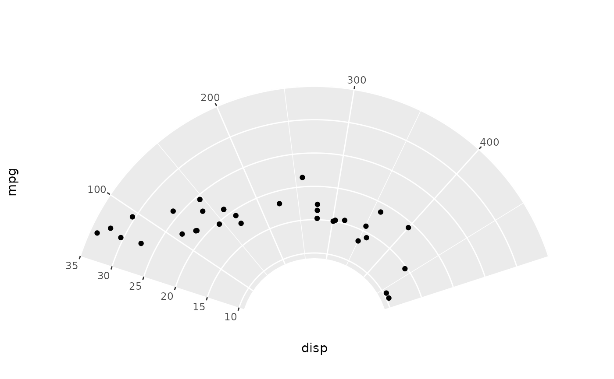

The polar coordinate system is most commonly used for pie charts, which
are a stacked bar chart in polar coordinates. coord_radial() has extended
options.
Usage
coord_polar(theta = "x", start = 0, direction = 1, clip = "on")
coord_radial(
theta = "x",
start = 0,
end = NULL,
expand = TRUE,
direction = 1,
clip = "off",
r.axis.inside = NULL,
rotate.angle = FALSE,
inner.radius = 0,
r_axis_inside = deprecated(),
rotate_angle = deprecated()
)Arguments
- theta
variable to map angle to (
xory)- start
Offset of starting point from 12 o'clock in radians. Offset is applied clockwise or anticlockwise depending on value of
direction.- direction
1, clockwise; -1, anticlockwise
- clip
Should drawing be clipped to the extent of the plot panel? A setting of
"on"(the default) means yes, and a setting of"off"means no. For details, please seecoord_cartesian().- end
Position from 12 o'clock in radians where plot ends, to allow for partial polar coordinates. The default,
NULL, is set tostart + 2 * pi.- expand
If
TRUE, the default, adds a small expansion factor the the limits to prevent overlap between data and axes. IfFALSE, limits are taken directly from the scale.- r.axis.inside
One of the following:
NULL(default) places the axis next to the panel ifstartandendarguments form a full circle and inside the panel otherwise.TRUEto place the radius axis inside the panel.FALSEto place the radius axis next to the panel.A numeric value, setting a theta axis value at which the axis should be placed inside the panel. Can be given as a length 2 vector to control primary and secondary axis placement separately.
- rotate.angle
If
TRUE, transforms theangleaesthetic in data in accordance with the computedthetaposition. IfFALSE(default), no such transformation is performed. Can be useful to rotate text geoms in alignment with the coordinates.- inner.radius
A
numericbetween 0 and 1 setting the size of a inner.radius hole.- r_axis_inside, rotate_angle
![[Deprecated]](figures/lifecycle-deprecated.svg)
Note
In coord_radial(), position guides are can be defined by using
guides(r = ..., theta = ..., r.sec = ..., theta.sec = ...). Note that
these guides require r and theta as available aesthetics. The classic
guide_axis() can be used for the r positions and guide_axis_theta() can
be used for the theta positions. Using the theta.sec position is only
sensible when inner.radius > 0.
See also
The polar coordinates section of the online ggplot2 book.
Examples
# NOTE: Use these plots with caution - polar coordinates has
# major perceptual problems. The main point of these examples is
# to demonstrate how these common plots can be described in the
# grammar. Use with EXTREME caution.
#' # A pie chart = stacked bar chart + polar coordinates
pie <- ggplot(mtcars, aes(x = factor(1), fill = factor(cyl))) +
geom_bar(width = 1)
pie + coord_polar(theta = "y")

# \donttest{
# A coxcomb plot = bar chart + polar coordinates
cxc <- ggplot(mtcars, aes(x = factor(cyl))) +
geom_bar(width = 1, colour = "black")
cxc + coord_polar()

# A new type of plot?
cxc + coord_polar(theta = "y")

# The bullseye chart
pie + coord_polar()

# Hadley's favourite pie chart
df <- data.frame(
variable = c("does not resemble", "resembles"),
value = c(20, 80)
)
ggplot(df, aes(x = "", y = value, fill = variable)) +
geom_col(width = 1) +
scale_fill_manual(values = c("red", "yellow")) +
coord_polar("y", start = pi / 3) +
labs(title = "Pac man")

# Windrose + doughnut plot
if (require("ggplot2movies")) {
movies$rrating <- cut_interval(movies$rating, length = 1)
movies$budgetq <- cut_number(movies$budget, 4)
doh <- ggplot(movies, aes(x = rrating, fill = budgetq))
# Wind rose
doh + geom_bar(width = 1) + coord_polar()
# Race track plot
doh + geom_bar(width = 0.9, position = "fill") + coord_polar(theta = "y")
}
#> Loading required package: ggplot2movies

# }
# A partial polar plot
ggplot(mtcars, aes(disp, mpg)) +
geom_point() +
coord_radial(start = -0.4 * pi, end = 0.4 * pi, inner.radius = 0.3)
